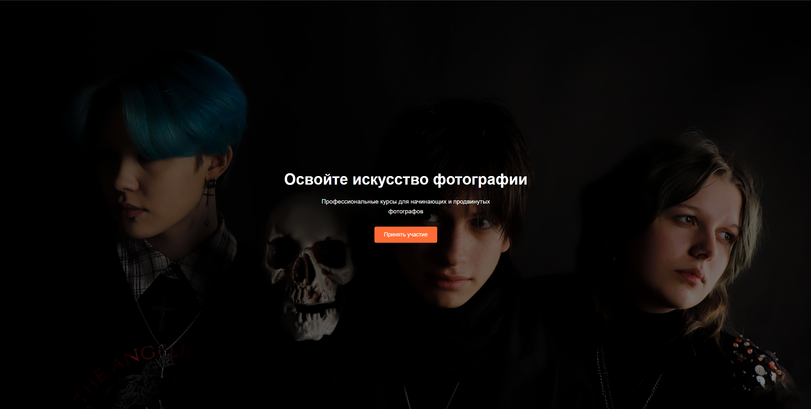
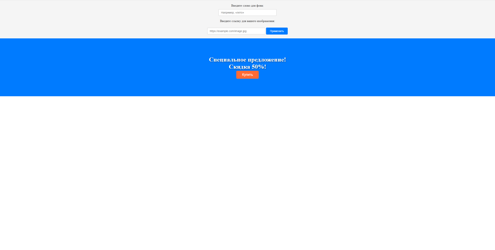
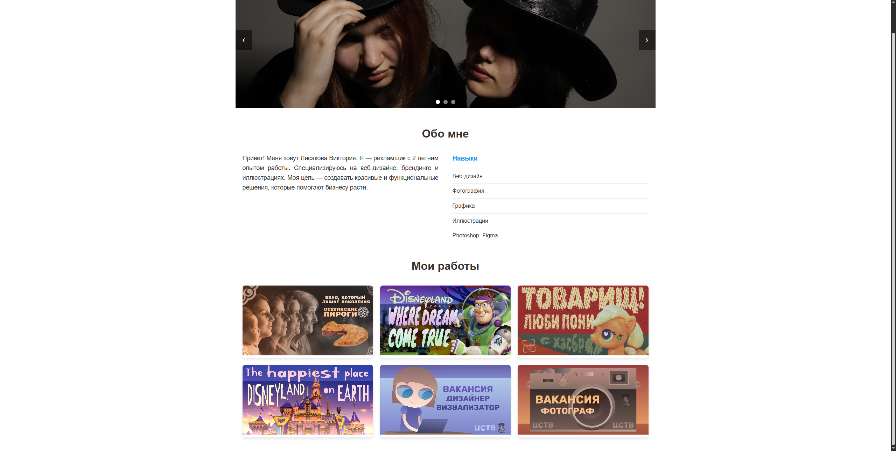
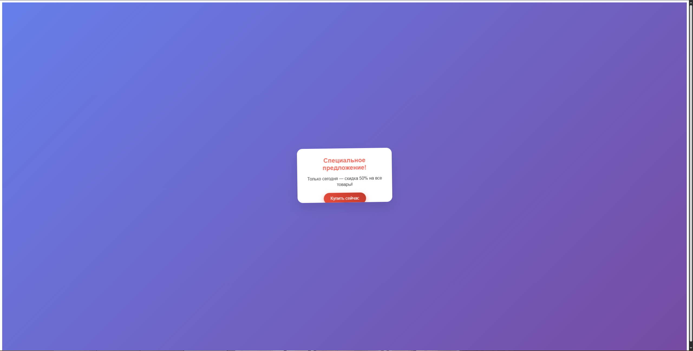
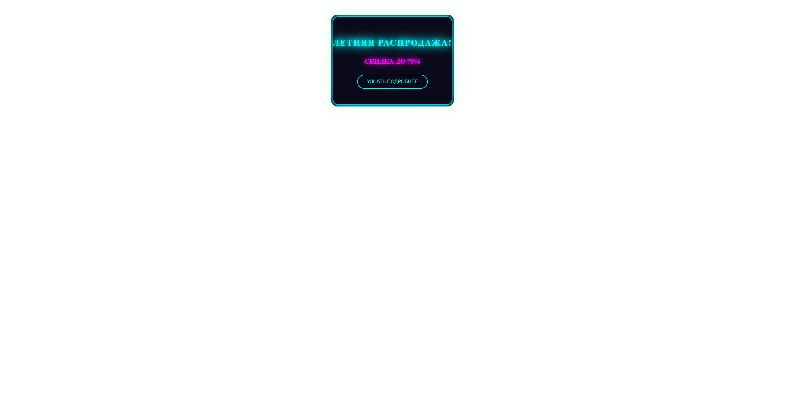
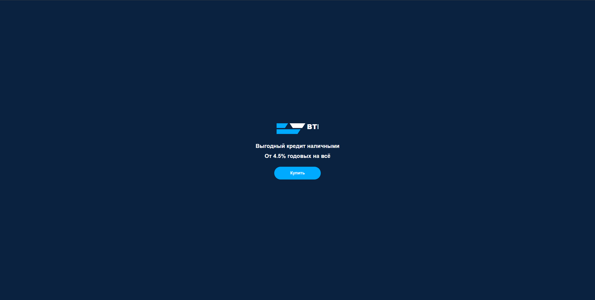
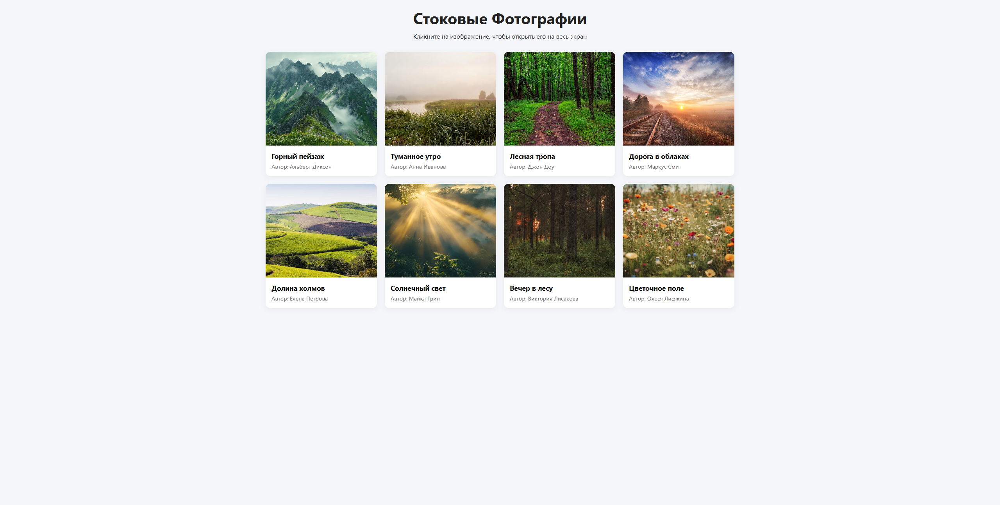
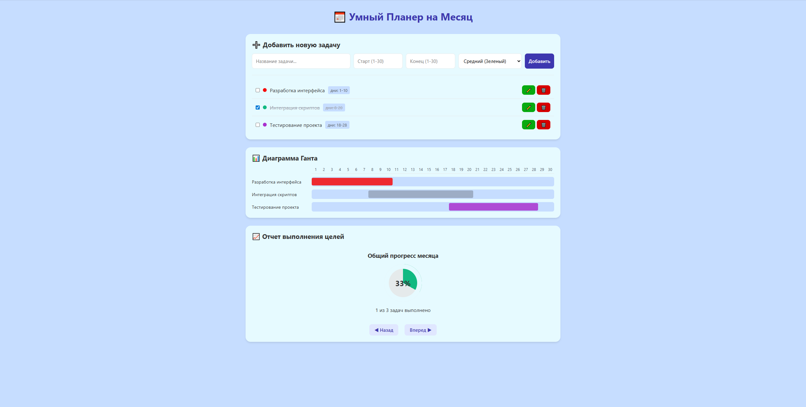

Глава 1: Ознакомление с азами кодинга
В самом начале учебной практики были пройдены обучающие уроки кодинга на сайте Code Basics, в которых были представлены основные теги в HTML. В них вошло создание списков, параграфов (абзацев), ссылок, добавление иллюстраций и аудио.


Далее мы ознакомились с теорией, которая включала в себя изучение теории вёрстки сайта (история вёрстки сайта, способы вёрстки сайта), определение функций файлов HTML (каркас), CSS (оформление) и JavaScript (интерактивность).
Глава 2: Создание адаптивного рекламного объявления в VSC и GitHub
Разработка сайта с адаптивным рекламным объявлением (Курсы для фотографов). Создание файлов HTML и CSS. Добавление фонового изображения. Сайт.

Глава 3: Создание интерактивного рекламного объявления в VSC и GitHub
Разработка сайта с интерактивным рекламным объявлением. Создание файлов HTML, CSS и JS. Изменение цвета баннера и добавление интерактивной кнопки «Купить».Сайт.

Глава 4: Создание сайта портфолио-слайдера в VSC и GitHub
Разработка сайта с интерактивным портфолио-слайдером. Создание файлов HTML, CSS и JS. Добавление 9 изображений. Сайт.

Глава 5: Создание сайтов с анимацией в VSC и GitHub
Разработка трёх сайтов с анимацией (Скидка 50%, Летняя распродажа и ВТБ). Разделение "смешанных" файлов на HTML, CSS и JS.
Первый сайт.
Второй сайт.
Третий сайт.
Глава 6: Создание Фотостокового каталога в VSC и GitHub
Разработка сайта Фотостокового каталога. Разделение "смешанного" файла на HTML, CSS и JS. Добавление блоков и изображений. Сайт.

Глава 7: Создание Умного планировщика в VSC и GitHub
Разработка Умного планировщика. Разделение "смешанного" файла на HTML, CSS и JS. Изменение цветов и их названий при выборе уровня важности задачи. Сайт.

Вывод
Кодинг сайта - это сложный процесс, который включает в себя знание основ работы с HTML, CSS и JS файлами. Самое важное в процессе - соединить между собой файлы, отвечающие за каркас, оформление, интерактивность и изображения путём прописания соответствующих тегов, правильных названий и создания файлов в общей папке.